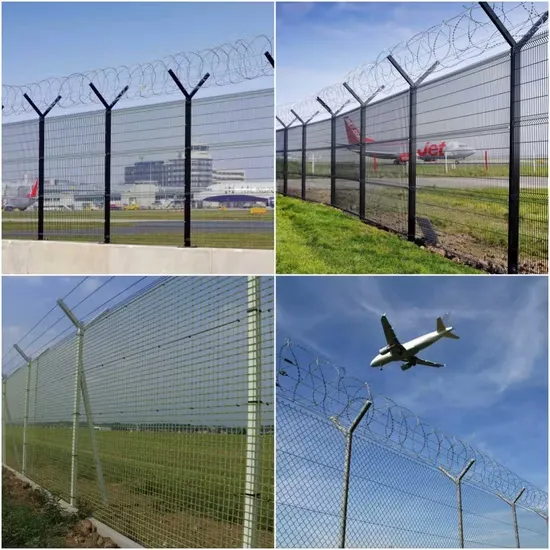
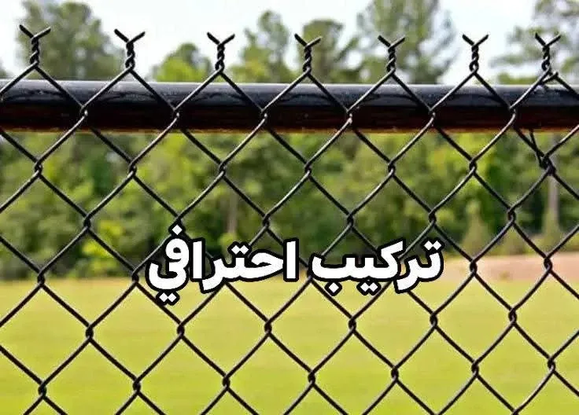
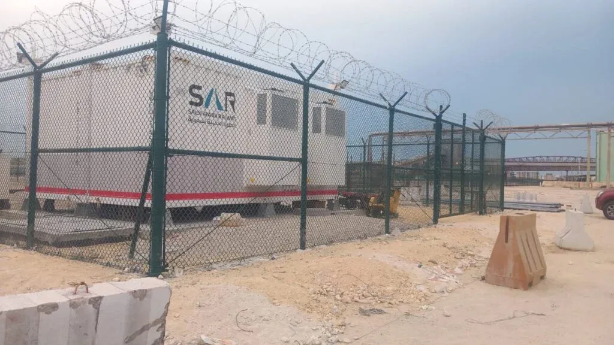
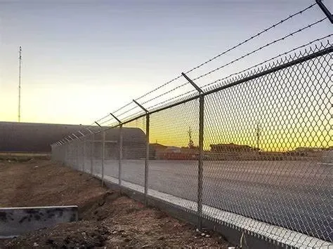
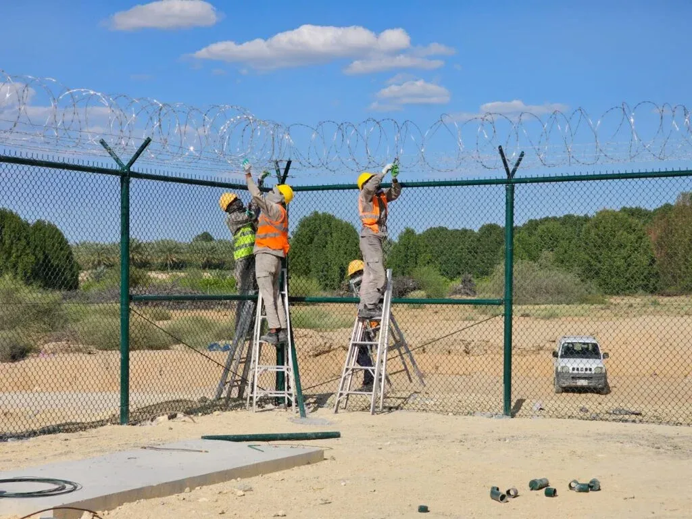

الخدمة الهندسية الشاملة
مقاول تركيب شبوك وسياج أمني معتمد
نقدم خدمات توريد وتثبيت كافة أنواع الشبوك والسياج الأمني للأراضي والمزارع والمشاريع الكبرى
المواصفات والخبرة
دقة في التأسيس وقوة في الشبك والتحمل
نمتلك في مؤسستنا خبرة واسعة تمتد لسنوات في قطاع المقاولات وتوريد وتركيب الشبوك بمختلف القياسات والأنواع، معتمدين على أحدث الآليات الهندسية لحفر وتثبيت القواعد الخرسانية المسلحة والعادية لضمان بقاء السياج صامداً أمام الرياح الشديدة والعوامل المناخية الصحراوية.
مراحل تنفيذ وتركيب الشبوك:
- 1. المعاينة ورفع المساحات: زيارة الموقع وتحديد الحدود والارتفاعات المطلوبة وطبيعة التربة.
- 2. حفر وصب القواعد: حفر جور بأعماق مدروسة وصب خرسانة مقاومة لتثبيت أعمدة التيوبات والمواسير.
- 3. تركيب الهياكل والشدادات: تركيب المواسير المجلفنة، زوايا الدعم، وشد أسلاك الربط الفولاذية.
- 4. فرد وتثبيت الشبك: مد الشبك المجلفن أو المغطى بالبي في سي وربطه بماكينات شد احترافية تمنع الارتخاء.
- 5. تركيب الأبواب والأسلاك الشائكة: تفصيل بوابات حديدية وسحب أسلاك شائكة علوية لتعزيز الأمان.
احجز موعد معاينة موقعك
أرسل بياناتك لتحديد موعد زيارة المهندس ومعاينة الموقع:
معرض الصور
صور من مواقع تركيب الشبوك الميدانية
توثيق حي لأعمال تثبيت القواعد وشد الشبوك المجلفنة في مختلف التضاريس والمواقع.

شد وتركيب الشبك المجلفن

تثبيت القواعد والمواسير

تسوير مخططات وأراضي شاسعة

سياج حماية أمني مقاوم

شبك PVC ملبس ومقاوم للصدأ

تفصيل وتركيب بوابات الشبوك

شبوك منشآت وكسارات صناعية

سلك شائك حلزوني علوي